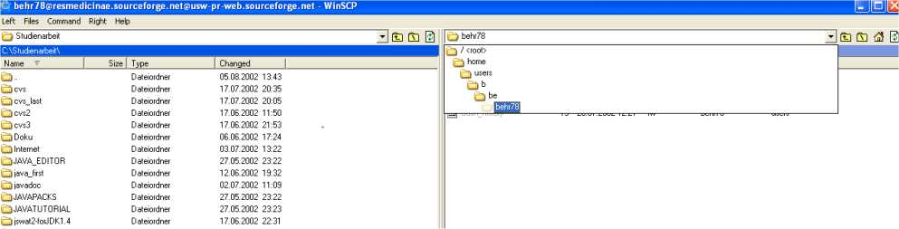

After this tuning WinSCP should indicate you a window. At the left side the folders of your computer appear and at the right side the folders of the Sourceforge server appear.
Change the directory at the right side into “home/groups/r/re/resmedicinae/htdocs”.

It is the home directory of the Resmedicinae project. You see an “index.html” file. It is the file, which is automatically loaded when you visit the page www.resmedicinae.org.
Now you can choose HTML files, screenshots or other files at right side and upload them to the Sourceforge server. Under File you can find the options “copy”, “move” and “delete”. The option “move” removes the files at your computer/Sourceforge server and will store them at the Sourceforge server/your computer. That’s all! More knowledge is not necessary!
Notice:
You should pay attention, that all members of the Resmedicinae project have the right to read, write and execute the files (permissions). Others should not have the right to write to Resmedicinae project files!
Contact one of the following lists to get information at which place your files should be stored! However the home directory is always “home/groups/r/re/resmedicinae/htdocs”.
resmedicinae-developers@lists.sourceforge.net
resmedicinae-webmasters@lists.sourceforge.net
<<PREVIOUS NEXT>>